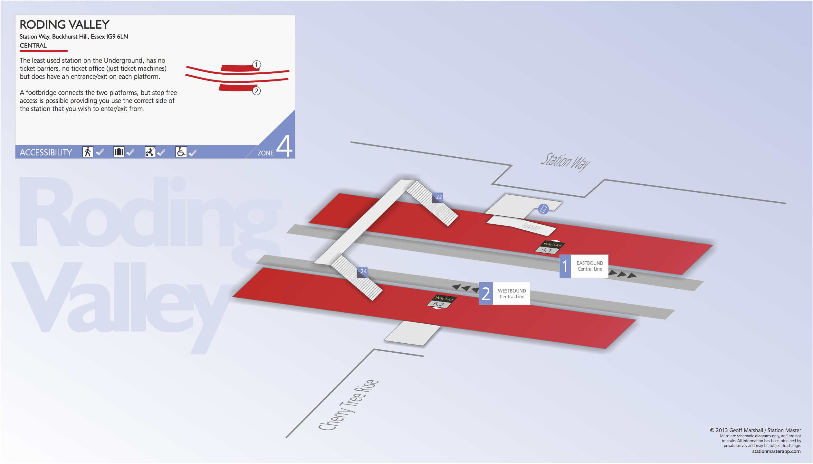
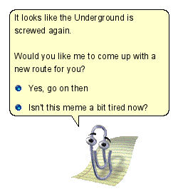

The sciencey bit
Kirk Northrop
Disclaimer
I'm not a data scientist
I didn't do maths after A-Level
Please feel free to get in touch!
How the tube challenge sees it
Roding Valley
King's Cross St. Pancras
"Surely it's just the travelling salesman problem?"
How the network sees it
 Roding Valley
Roding Valley
 King's Cross St. Pancras
King's Cross St. Pancras
How a human sees it
Roding Valley
How a human sees it
King's Cross St. Pancras

Timetables

Woodford via Hainault

Epping

Timetables
Timetables


"Yes the underground has a timetable but at the end of a long journey things can get messed up"
"I know that Woodford isn't very big, and it's a simple run over the bridge to get onto the Epping train"
"The next train is five minutes behind, so if we miss it it's not too bad, and if we make it, then we'll be ahead!"
Let's assume we're sticking to the timetable...
"Quite Well"
"Good Service"

WARNING
Timetable data
Three signs of easy-to-use data
XML format
Designed by the Government
via outsourcers
TransXChange
An XML Standard for the Data Exchange of Bus Schedules and Related Information.
TransXChange
TransXChange
A Route is made of multiple RouteSections
Then there's a JourneyPattern
That's made up of JourneyPatternSections
Which have no relationship to Routes or RouteSections
But a JourneyPattern DOES link to a Route
Then there's a Service
Made up of JourneyPatterns
And VehicleJourneys, which is effectively an instance of a JourneyPattern
TransXChange
"Actually, it's not that bad once you're used to it."
Believe in timetables
Fixing on the fly
Why can't it do this for me?
I probably could have done it manually by now
Our record
16:20:27
Planned time for above record
16:02ish
Current record
15:45:38
Lower limit
15:30:00?